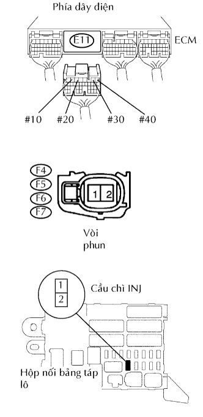

HỆ THỐNG SFI > Mạch Vòi Phun Nhiên Liệu |
| 1.KIỂM TRA ECM (ĐIỆN ÁP #10, #20, #30, #40) |
Bật khoá điện ON.
Đo điện áp của các giắc nối ECM.
| Nối dụng cụ đo | Điều kiện tiêu chuẩn |
| E11-6 (#10) - E12-7 (E01) | 9 đến 14 V |
| E11-5 (#20) - E12-7 (E01) | 9 đến 14 V |
| E11-2 (#30) - E12-7 (E01) | 9 đến 14 V |
| E11-1 (#40) - E12-7 (E01) | 9 đến 14 V |
| Nối dụng cụ đo | Điều kiện tiêu chuẩn |
| E11-6 (#10) - E12-7 (E01) | Dạng sóng đúng như trong hình vẽ |
| E11-5 (#20) - E12-7 (E01) | Dạng sóng đúng như trong hình vẽ |
| E11-2 (#30) - E12-7 (E01) | Dạng sóng đúng như trong hình vẽ |
| E11-1 (#40) - E12-7 (E01) | Dạng sóng đúng như trong hình vẽ |
| Đặt dụng cụ | Điều kiện |
| 20 V/DIV., 100 hay 1 msec./DIV. | Không tải |
|
| ||||
| NG | |
| 2.KIỂM TRA CỤM VÒI PHUN NHIÊN LIỆU (ĐIỆN TRỞ) |
Kiểm tra cụm vòi phun nhiên liệu (Xem trang Kích chuột vào đây).
|
| ||||
| OK | |
| 3.KIỂM TRA CẦU CHÌ (INJ) |
Tháo cầu chì IGN ra khỏi hộp rơle và cầu chì bảng táplô.
Đo điện trở giữa của cầu chì.
|
| ||||
| OK | |
| 4.KIỂM TRA DÂY ĐIỆN CỦA XI LANH BỎ MÁY (VÒI PHUN - ECM, VÒI PHUN - CẦU CHÌ INJ) |
|  |
Kiểm tra dây điện giữa vòi phun và ECM.
Ngắt các giắc nối F4, F5, F6 và/hoăc F7 của vòi phun.
Ngắt giắc nối E11 của ECM.
Đo điện trở của các giắc nối phía dây điện.
| Nối dụng cụ đo | Điều kiện tiêu chuẩn |
| F4-2 - E11-6 (#10) | Dưới 1 Ω |
| F5-2 - E11-5 (#20) | Dưới 1 Ω |
| F6-2 - E11-2 (#30) | Dưới 1 Ω |
| F7-2 - E11-1 (#40) | Dưới 1 Ω |
| F4-2 hay E11-6 (#10) - Mát thân xe | 10 kΩ trở lên |
| F5-2 hay E11-5 (#20) - Mát thân xe | 10 kΩ trở lên |
| F6-2 hay E11-2 (#30) - Mát thân xe | 10 kΩ trở lên |
| F7-2 hay E11-1 (#40) - Mát thân xe | 10 kΩ trở lên |
Kiểm tra dây điện giữa vòi phun và cầu chì INJ.
Ngắt các giắc nối F4, F5, F6 và/hoăc F7 của vòi phun.
Tháo cầu chì IGN ra khỏi hộp rơle và cầu chì bảng táplô.
Đo điện trở của các giắc nối phía dây điện.
| Nối dụng cụ đo | Điều kiện tiêu chuẩn |
| F4-1 - Cực 2 của cầu chì INJ của J/B | Dưới 1 Ω |
| F5-1 - Cực 2 của cầu chì INJ của J/B | Dưới 1 Ω |
| F6-1 - Cực 2 của cầu chì INJ của J/B | Dưới 1 Ω |
| F7-1 - Cực 2 của cầu chì INJ của J/B | Dưới 1 Ω |
| F4-1 hay cực 2 của cầu chì J/B INJ - Mát thân xe | 10 kΩ trở lên |
| F5-1 hay cực 2 của cầu chì J/B INJ - Mát thân xe | 10 kΩ trở lên |
| F6-1 hay cực 2 của cầu chì J/B INJ - Mát thân xe | 10 kΩ trở lên |
| F7-1 hay cực 2 của cầu chì J/B INJ - Mát thân xe | 10 kΩ trở lên |
|
| ||||
| OK | |
| 5.KIỂM TRA DÂY ĐIỆN (KHOÁ ĐIỆN - CẦU CHÌ INJ) |
Ngắt giắc nối I9 của khóa điện.
Tháo cầu chì IGN ra khỏi hộp rơle và cầu chì bảng táplô.
Đo điện trở của các giắc nối phía dây điện.
| Nối dụng cụ đo | Điều kiện tiêu chuẩn |
| I9-6 (IG2) - Cực 1 của cầu chì INJ của J/B | Dưới 1 Ω |
| I9-6 (IG2) hay cực 1 của cầu chì J/B INJ - Mát thân xe | 10 kΩ trở lên |
|
| ||||
| OK | ||
| ||
| 6.KIỂM TRA DÂY ĐIỆN (ECM - MÁT THÂN XE) |
Ngắt giắc nối E12 của ECM.
Đo điện trở giữa của giắc nối phía dây điện.
| Nối dụng cụ đo | Điều kiện tiêu chuẩn |
| E12-7 (E01) - Mát thân xe | Dưới 1 Ω |
| E12-6 (E02) - Mát thân xe | Dưới 1 Ω |
|
| ||||
| OK | |
| 7.KIỂM TRA CỤM VÒI PHUN NHIÊN LIỆU (LƯỢNG PHUN NHIÊN LIỆU) |
Kiểm tra cụm vòi phun nhiên liệu (Xem trang Kích chuột vào đây).
|
| ||||
| OK | ||
| ||